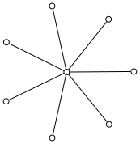
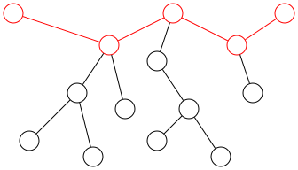
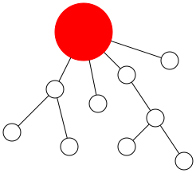
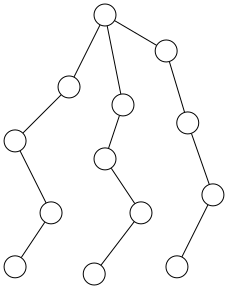

Distance in Trees and Graphs¶
In this section, by introducing the concept of distance in graphs, we examine related definitions of distance both in the general case and specifically in trees. Discussing distance in trees is considerably easier than in general graphs, because as we analyzed in the previous section, the path between any two vertices in a tree is unique.
What is Distance?¶
Consider two vertices \(u,v\) in a graph. The distance between these two vertices is defined as the length (number of edges) of the shortest path between them.
Note: If two vertices are in two separate connected components, their distance is infinite.
The distance between two vertices \(u,v\) is denoted as \(d(u,v)\).
Diameter¶
Definition: The diameter of a graph is equal to \(Max_{u,v} d(u,v)\), or in other words, the maximum distance between any pair of vertices in the graph.
Note that the diameter is not the longest path, but rather the longest distance. However, in a tree, the longest path and the diameter coincide. If you take the two endpoints of the longest path in a tree, there is exactly one path between them. Since this path is the longest possible, its length equals the distance between those two vertices. Thus, the diameter equals the length of the longest path.
The distinction between the longest path and the diameter becomes significant in general graphs: finding the diameter of a graph can be solved in polynomial time, whereas finding the longest path is an NP-hard problem.
Eccentricity¶
If we consider the vertex name as \(u\), the eccentricity of \(u\) equals the maximum \(d(u,v)\) for all vertices \(v\).
If the graph is a tree and we root the tree at \(u\), the eccentricity of \(u\) becomes the height of the vertex with the maximum height in the tree.
The eccentricity of vertex \(u\) is denoted by \(\varepsilon{(u)}\).
Theorem 2.2.1¶
Theorem Statement: In a tree, the eccentricity of a vertex equals the maximum distance from that vertex to the two endpoints of the diameter.
Proof: We use proof by contradiction. Let vertex \(a\) be our target vertex, and let \(u, v\) be the two endpoints of the diameter. Let vertex \(b\) be the vertex whose distance from \(a\) is \(\varepsilon(a)\) (the eccentricity of \(a\)). If \(a\) were one of the diameter's endpoints, the statement would trivially hold. Thus, assume \(a\) is neither endpoint.
Hang the tree from \(a\). Let \(mh\) be the vertex with the greatest height such that all three vertices \(b, u, v\) lie in its subtree. Since \(mh\) is the highest common ancestor of these three vertices, either \(mh = b\) or one of \(mh\)'s children (which is an ancestor of \(b\)) lacks at least one of \(u\) or \(v\) in its subtree. This implies \(mh = \text{lca}(u, b)\) or \(\text{lca}(v, b)\). Without loss of generality, assume \(mh = \text{lca}(u, b)\). We now prove \(d(b, u) > d(u, v)\), which will lead to a contradiction with the diameter's maximality.
Step 1: Show \(d(b, u) > d(u, v)\).
Step 2: Since \(mh = \text{lca}(b, u)\), we have \(d(b, u) = h(b) + h(u) - 2 \times h(mh)\).
Step 3: Even if \(mh \neq \text{lca}(u, v)\), it remains a common ancestor, so \(d(u, v) \leq h(u) + h(v) - 2 \times h(mh)\).
Step 4: Combining these:
\[h(b) + h(u) - 2 \times h(mh) > h(u) + h(v) - 2 \times h(mh) \implies h(b) > h(v).\]This contradicts the assumption that \(v\) is an endpoint of the diameter (and thus has maximal height). Hence, the theorem is proven.
Radius and Center¶
A vertex which has the minimum eccentricity among the graph's vertices is called the graph's center, and its eccentricity is called the graph's radius.
Theorem 2.2.2¶
In a tree, if the diameter is \(Q\), then the radius is \(\lceil{Q/2}\rceil\).
In a tree, if \(Q\) is odd, the two middle vertices of the diameter path are the centers. If \(Q\) is even, the middle vertex of the diameter is the center.
Proof: First, we prove that a vertex not lying on the diameter path cannot be a center. Consider a vertex \(u\) not on the diameter path, and let \(v\) be a vertex on the diameter path whose distance to \(u\) is minimal. According to Theorem 2.2.1, we have \(\varepsilon{(u)} = \varepsilon{(v)} + d(u,v)\). Thus, \(u\) cannot be a center.
Now, number the vertices along the diameter path sequentially from one end (i.e., from 0 to \(Q\)). By Theorem 2.2.1, the eccentricity of the \(i\)-th vertex on the diameter path is \(\max(i, Q-i)\). The minimum of this expression occurs when \(i\) and \(Q-i\) have the smallest possible difference. Therefore:
If \(Q\) is even, the solution is \(\max(Q - Q/2, Q/2) = Q/2\). Hence, the radius is \(Q/2\), and the only center is the middle vertex of the diameter path (vertex \(Q/2\)).
If \(Q\) is odd, the radius becomes \(\max((Q-1)/2, (Q+1)/2) = (Q+1)/2\). The only vertices on the diameter path satisfying this condition are the \((Q-1)/2\)-th and \((Q+1)/2\)-th vertices, which are the two middle vertices of the diameter path.
Centroid¶
A vertex in a graph whose sum of distances to all other vertices is minimized is called the centroid of the graph. Similar to the previous definitions, the centroid in a tree also has an interesting property, which is stated in the following theorem.
Theorem 2.2.3¶
A vertex is a centroid in a tree if and only if, when removed, the size of every connected component is at most \(n/2\).
A tree has at most two centroids. If there are two, the graph has an even number of vertices, and the two centroids are adjacent.
Proof We label the vertices and let \(a_i\) denote the sum of distances from vertex \(i\) to all other vertices. First, we prove the "if" part of (a). Assume vertex \(u\) is a centroid. If removing \(u\) results in a connected component with size greater than \(n/2\), consider the neighbor of \(u\) in this component, say \(v\). The distance from \(v\) to vertices within this component is one less than the distance from \(u\) to them, while its distance to other vertices is one more than that of \(u\). Thus, \(a_v = a_u - sz + (n - sz)\), where \(sz\) is the size of this component. Since \(sz > n/2\), we have \(n - 2 \times sz < 0\), implying \(a_v < a_u\). This contradicts the minimality of \(a_u\) for a centroid, thereby proving (a).
Next, we prove that any two vertices \(i\) and \(j\) satisfying the "if" condition in (a) must have \(a_i = a_j\). Since all centroids satisfy this condition, they must share the same \(a_i\) value. Root the tree at vertex \(i\). Define a variable \(A\) such that at vertex \(z\), \(A = a_z\). Initially, \(A = a_i\). Traverse the path from \(i\) to \(j\). When moving from a parent to its child, \(A\) decreases by the size of the child’s subtree and increases by the number of vertices outside this subtree. Since the size of \(j\)'s subtree (when rooted at \(i\)) is at least \(n/2\) (as removing \(j\) leaves its parent’s component with size at most \(n/2\)), the size of all ancestors’ subtrees along this path is also at least \(n/2\). Thus, \(A\) either decreases or remains constant, yielding \(a_i \geq a_j\). Repeating this process by rooting at \(j\) gives \(a_j \geq a_i\). Hence, \(a_i = a_j\).
For part (b), assume two centroids \(i\) and \(j\) exist. Root the tree at \(i\) and traverse the path to \(j\). For \(A\) to remain unchanged during traversal, the size of the child’s subtree must equal \(n/2\). Since the size of \(j\)'s subtree is at least \(\lceil{n/2}\rceil\), \(j\) must be a direct child of \(i\) with subtree size exactly \(n/2\). This requires \(\lfloor{n/2}\rfloor = \lceil{n/2}\rceil\), implying \(n\) is even. Additionally, the two centroids must be adjacent. Thus, a tree can have at most two centroids, and if two exist, the graph has an even number of vertices with the centroids adjacent. This precludes cycles, completing the proof.
Sum of Distances¶
Assume in a problem the goal is to minimize or maximize the sum of distances between every pair of vertices. Let's call this sum the graph density. Intuitively, the lower the graph density, the more compact the graph is, and the higher the graph density, the more spread out and expansive the graph becomes.
Additionally, for distance to be well-defined, we assume our subject of discussion is connected graphs.

The distance between two vertices is at least 1. In the graph \(K_n\), the distance between any two vertices is exactly 1. Therefore, the minimal possible density is achieved in the graph \(K_n\), which equals \(n \choose 2\).
If we restrict the domain of discussion to trees, the problem becomes slightly more complex. However, we can still infer the following:
Exactly \(n-1\) pairs of vertices have a distance of exactly 1. This is because a tree has \(n-1\) edges.
Every pair of vertices not connected by an edge has a distance of at least 2.
Thus, the minimal possible density is at least \(2 \times {n \choose 2} - (n-1)\). The only example satisfying this bound is the case where the distance between any two vertices is at most 2. The only tree with this property is the star graph (as shown in the figure). This is because if two leaves in this graph do not share a common parent, their distance will be at least 3.
{kind=link}

1def compute_density(graph):
2 # vertices_count = تعداد راس ها
3 vertices_count = graph.vertices_count()
4 # edges_count = تعداد یال ها
5 edges_count = graph.edges_count()
6 return edges_count / vertices_count
Maximizing Graph Density¶
In this case, note that if removing an edge does not disconnect the graph, we must do so. Because removing an edge increases the density (why?). Therefore, the graph with maximum density must be sought among trees (since as we stated earlier, all its edges must be bridges).
Now consider a specific vertex like \(u\). We claim the sum of distances from \(u\) to all other vertices is at most \(n \choose 2\).
To prove this, assume we've rooted the tree at \(u\). For each depth level, we know how many vertices exist at that height, with the maximum height being \(H\). In this case, we must have at least one vertex at every height from 0 to \(H\). Now if there are at least two vertices at the same height, one can be moved to a higher height, thereby increasing the total sum of distances. By repeating this process, we reach a state where exactly one vertex exists at each height from 0 to \(n-1\) (i.e., the tree becomes a path). In this case, the total sum of distances from \(u\) will be \(1 + 2 + ... + (n-1) = {n \choose 2}\). Thus, we've proven that the sum of distances from any vertex \(u\) is at most \(n \choose 2\).
Therefore, to establish a bound, iteratively remove a leaf from the tree and calculate the sum of distances from this leaf. The total sum of all these values equals the graph's density, which according to our earlier reasoning will be at most \(\sum\limits_{i=1}^{n} {i \choose 2} = {{n+1} \choose 3}\) (by Cauchy's identity).
We can conclude that the only graph achieving equality in this bound is the path graph.
Support Tree¶
Suppose we have a communication network connecting \(n\) cities. To ensure reliability, we have prepared a backup communication network so that if the main network fails, we can use the backup to maintain connectivity.
In graph terms, we have two \(n\)-vertex trees \(T\) and \(T^{\prime}\). We aim to prove that if an edge \(uv\) in \(T\) is disconnected, we can add an edge \(u^{\prime}v^{\prime}\) from \(T^{\prime}\) to \(T\) such that the structure remains connected.
After removing \(uv\) from \(T\), the tree splits into two connected components. Let us color one component blue and the other red. In the tree \(T^{\prime}\), there exists a path between \(u\) and \(v\). Along this path, there must be an edge where one endpoint is in the blue component and the other is in the red component (why?). If this edge is \(u^{\prime}v^{\prime}\), we can add it to \(T\) to restore connectivity!
Covering Tree Edges with Paths¶
In this section, we aim to find the minimum number of paths whose union covers all edges of \(T\). This problem is similar to the previous case with the difference that in the previous case, we partitioned edges into paths (i.e., each edge belonged to exactly one path). Here, we have the freedom to allow a path to cover an edge multiple times. It can be concluded that the solution to this problem will be smaller than the previous one.
At first glance, one realizes that since extending paths does not harm our goal, there exists an optimal solution where both ends of every path are leaves!
On the other hand, consider the edge connecting each leaf to its adjacent vertex. Each path can cover at most 2 of these edges. Thus, if there are \(X\) leaves, we need at least \(\frac{X}{2}\) paths. Now, we try to achieve this bound. That is, if \(X\) is even, we cover the tree edges with \(\frac{X}{2}\) paths, and if \(X\) is odd, with \(\frac{X+1}{2}\) paths.
Hence, we try to iteratively transform the tree after selecting each path into a tree with two fewer leaves (except in the last step when \(X\) is odd). If this is possible, the number of selected paths will be half the number of leaves, as desired.
Take two arbitrary leaves \(u, v\) and consider the tree "hung" from the path between them. First, select this path (which covers the edges between \(u\) and \(v\)). Suppose the vertices of this path are \(a_1, ..., a_k\). We now construct a new tree where instead of \(a_1, ..., a_k\), we have a single vertex! An edge exists between this vertex and a vertex \(w\) if and only if there was an edge between \(w\) and any of \(a_1, ..., a_k\) (intuitively, this is like compressing all vertices of the path into a single vertex). Now, every path in the new graph corresponds to a path in the original graph, and we only need to cover all edges of the new tree with paths!
{kind=link}

{kind=link}

Thus, in each step, we compress a path connecting two leaves into a single vertex. In each step, the number of leaves in the new graph decreases by two, unless the newly added vertex (the compressed vertex) becomes a leaf. This happens if all vertices on the path between \(u\) and \(v\) have degree 2 except one, which must have degree 3. Such a pair \(u, v\) is called an incompatible pair.
Therefore, if we can select two leaves \(u, v\) in each step that do not form an incompatible pair, we proceed (reducing the number of leaves by two after compression). What if we cannot? In this case, we claim that the tree has exactly one vertex of degree 3 and all other vertices have degree 1 or 2 (why?). As shown in the figure, such a tree will have exactly 3 leaves and can be covered with 2 paths.
{kind=link}

Tree Embedding¶
Suppose we have a tree \(T\) with \(n\) vertices. We also have a graph \(G\) such that \(\delta(G) \geq n-1\). We aim to prove that there exists a subset of edges in \(G\) that forms \(T\) (intuitively, that \(T\) can be embedded as a subgraph in \(G\)).
Consider an arbitrary leaf \(u\) (whose only neighbor is \(v\)) and remove \(u\) from the tree! Then, by induction, embed the smaller tree \(T-u\) into \(G\). Now, we want to add the edge \(uv\) back to our tree. Suppose vertex \(v\) in the original tree corresponds to vertex \(v^{\prime}\) in graph \(G\). It suffices to select a neighbor of \(v^{\prime}\) in \(G\) that has not yet been mapped to any vertex in the embedded tree. This neighbor can then be assigned to \(u\), completing the inductive step.
To find such a vertex, we use the assumption \(\delta(G) \geq n-1\). Since \(v^{\prime}\) has at least \(n-1\) neighbors and at most \(n-2\) of them are already mapped to vertices in the embedded tree, at least one neighbor of \(v^{\prime}\) remains unmapped. We can assign \(u\) to this neighbor, thereby satisfying the inductive hypothesis.
This problem illustrates the inductive structure of trees. Observe how removing a leaf allows us to apply the inductive hypothesis to the remaining tree, then extend the embedding by reattaching the leaf.
This book is made by The Shaazzz contributors.
It is publicly available with cc-by-sa license.
Last updated at اوت 27, 2025.
Rendered by Sphinx (4.3.2) and Minoo theme (Beta 0.9.7).